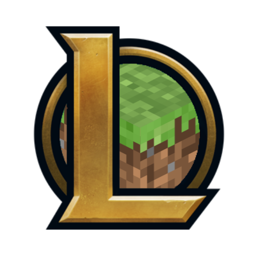

WHAT IS LEAGUE OF LEGENDS?
League of Legends (LoL) is a MOBA video game developed and published by Riot Games for Microsoft Windows and macOS. Inspired by the Warcraft III: The Frozen Throne mod Defense of the Ancients, the game follows a freemium model and is supported by microtransactions.
In League of Legends, players assume the role of a "champion" with unique abilities and battle against a team of other player- or computer-controlled champions. The goal is usually to destroy the opposing team's "Nexus", a structure that lies at the heart of a base protected by defensive structures, although other distinct game modes exist as well with varying objectives, rules, and maps.
Each League of Legends match is discrete, with all champions starting off relatively weak but increasing in strength by accumulating items and experience over the course of the game. Champions span a variety of roles and blend a variety of fantasy tropes, such as sword and sorcery, steampunk, and Lovecraftian horror. Although the discrete nature of each match prohibits an overarching narrative in-game, the various champions make up a large and ever-evolving fictional universe developed by Riot Games through short stories, comics, cinematics, books, and additional games.
Check the official page
WHAT IS MINECRAFT?
 Minecraft is a sandbox video game released by Mojang in 2011 and purchased by Microsoft in 2014.
Minecraft is a sandbox video game released by Mojang in 2011 and purchased by Microsoft in 2014.
In Minecraft, players explore an intentionally blocky, procedurally-generated 3D world, and may discover and extract raw materials, craft tools, build structures or earthworks, and, depending on game mode, can fight computer-controlled foes, as well as either cooperate with or compete against other players in the same world.
These modes include survival mode, in which players must acquire resources to build the world and maintain health, which is is threatened by haunting monsters like zombies, skeletons, giant spiders and the infamous creeper. A variaton of survival mode is hardcore mode, which makes the player have only one live. There's also creative mode, where players have unlimited resources.
The Minecraft Community also modded the game with new and creative objectives, which isn't directly supported by Mojang. However, the company introduced commands, and in the most recent updates of the game, it has been allowed to players to stack commands through the use of datapacks, allowing for more complex and interesting functions than the simplier command blocks.
Check the official page
WHAT IS LOLIMPROJECT?

LOLIM stands for "League of Legends In Minecraft", a fanmade and command-heavy minecraft map that recreates, without directly modding the game, League of Legends into the Minecraft world through the use of commands, datapacks and resourcepacks.
However, given the drastically different natures of both games, LOLIMProject is more of an adaptation than simple recreation of the game, and visceral changes on gameplay and design are undoubtedly in place. For starters, Minecraft is a first-person, blocky and sandbox game, and League of Legends has use of thousands of items and complex functions.
What started with just an interest on practicing programming in Minecraft Datapacks, using a custom programming language made by Mojang for the game, and the love Maelys showed for LoL, a game new to them, simple practice quickly evolved into this beast of a project.
After talking to their partners, three of them decided to join, which are the rest of the LOLIMProject development team.
Check our gallery
or
get to know us more
THE TEAM
-
Maelys Zuriaga
Maelys is the directress and main coder of LOLIMProject, a passionate and talented soul which always fiddles with almost everything they consider worthy. Having spent their life mostly practicing Minecraft programming and recently having discovered League of Legends, it was only a matter of time for this project to happen. They loves the PS2 game franchises Ratchet & Clank and Jak & Daxter, which prominently marked their love and interest for videogames.
-
Alie Cejudo
Alie is the additional coder of LOLIMProject while also being our web and external tools developer, so they will help with everythig code-related. With some experience of their own with modding Minecraft and having programming coding since practically forever, they will help the project be as good as it can possibly be. Flash games (The Binding of Isaac, they mainly recall) were their passion when they were little, which prompted their interest into the game development field.
-
Clara Giménez
Clara is compromised to the development of LOLIMProject's json models, but that doesn't stops her from helping wherever she can. After discovering the potential of Minecraft mapmaking, and with the force to pursue her dreams, she always had a urge for a project like this. She first played Rayman 2 on PC thanks to a Phoskitos (rolled cakes filled with milk and chocolate!) promo and it only got better while playing The Binding of Isaac, so she's really hyped with the project.
-

Noelia Da Silva
Noelia is the Design Co-leader and Builder of LOLIMProject. She's been playing League of Legends and Minecraft for more than seven years, so when Maelys told her about the project she instantly joined. Having experience with varied and different videogame projects, and being an IT student, Noe is a valuable and resourceful member. Her videogames passion started with the legendary MMORPG World of Warcraft, a game that even 10 years later she is still playing.